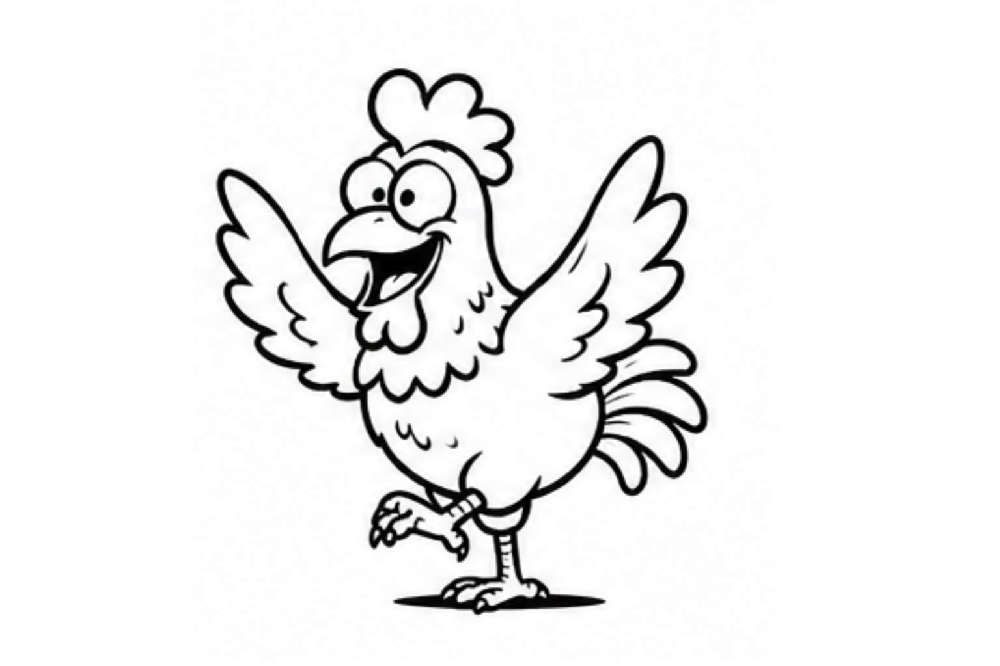
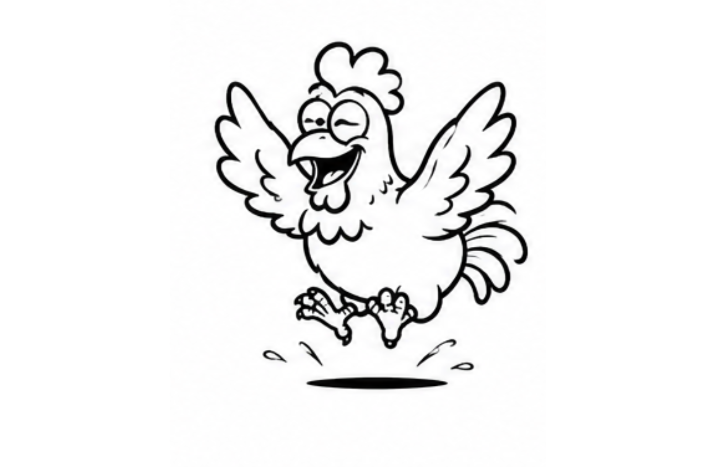

🐔 この記事でわかること
鶏小屋や庭先で鶏を眺めていると、地面を一生懸命かき分けて、砂やほこりの中で体をバタバタと転がす姿を見かけることがあります。これが「砂浴び（すなあび）」です。羽をパタパタさせながら、まるで気持ちよさそうに転げ回るその様子は、遊んでいるだけのようにも見えます。
ですが、動物の行動を研究する分野では、この一見のんびりした行動の裏に、いくつもの目的が同時に隠れていることがわかってきています。今回は、20年以上にわたって豚や鶏の飼育に関わってきた経験もまじえながら、研究をベースに「砂浴びの3つの意味」をやさしく紐解いていきます。

砂の中で歩く鶏の様子（写真差し替え用）
砂浴びには、決まった一連の動きがあります。しゃがみこんで羽を大きく開き、足で砂をかき上げて背中や羽の間にすり込み、最後に体をブルブルッと震わせて砂を払い落とす、という流れです。この動作は、羽についた余分な皮脂を落とし、羽の間の風通しを保つ役割があると考えられています。皮脂が多すぎると、羽の防水性や保温性がかえって落ちてしまうためです。
興味深いのは、エサも水も、羽繕いに困らない環境も整っている鶏でも、砂がまったくない場所に置かれると、あたかもそこに砂があるかのように同じ動作を繰り返すことです。これは「バーチャル砂浴び（模擬砂浴び）」と呼ばれ、複数の研究で報告されています。つまり砂浴びは「汚れたから仕方なくやる」行動ではなく、鶏の内側から湧き上がってくる欲求によって行われている可能性が高いのです。砂の粒子が羽の間を通り抜けていく感覚そのものが、鶏にとって心地よい刺激になっているのかもしれません。
💡 現場の視点から
実際の飼育現場でも、天気の良い日に砂場や乾いた地面があると、鶏たちが次々と集まってくる様子がよく見られます。栄養や健康状態に問題がなくても砂浴びをしたがるのは、それだけこの行動が鶏にとって「欠かせないもの」である証拠と言えそうです。
鶏は群れで暮らす社会的な動物です。砂浴びも「1羽だけで黙々と行う」よりも、「誰かが始めると、近くの仲間も次々に加わっていく」形で行われることがよくあります。仲間が砂浴びをしているのを見ると自分も始めやすくなる現象は「社会的促進」と呼ばれ、研究のテーマにもなってきました。
面白いことに、この社会的促進が実際にどの程度働いているかについては、研究者の間でも意見が分かれています。仲間の砂浴びを見た鶏の方が自分も砂浴びを始めやすいとする報告がある一方で、群れの中に競争相手がいてもいなくても砂浴びの様子は変わらなかったとする報告もあり、まだはっきりと結論が出ていないテーマなのです。群れの大きさや個体同士の力関係（順位）も影響するとみられ、比較的大きな群れでは、優位な個体ほど砂浴びの機会を多く得やすいとする研究結果も報告されています。
さらに、複数羽が同じ砂場に折り重なるように集まる「山積み」と呼ばれる光景が観察されることもあります。砂浴びが単なる個人的な手入れにとどまらず、群れの一体感やつながりを感じさせる行動でもあることがうかがえます。
砂浴びのもうひとつの大きな役割が、羽や皮膚についた外部寄生虫（羽ジラミやダニなど）への対策です。乾いた砂や土の細かい粒子が羽の間に入り込むことで、寄生虫の体表を覆う油分を吸着し、動きを鈍らせたり、体を震わせたときに一緒に払い落としたりする効果があると考えられています。
実際の飼育現場では、砂浴び場に珪藻土や木灰を混ぜる工夫も広く行われています。これらの素材は寄生虫予防に役立つと経験的に知られており、昔から養鶏の知恵として受け継がれてきました。羽繕いを十分に行えない個体にとっては、砂浴びがほぼ唯一の「衛生管理の手段」になっている場合もあります。

羽を広げて足で砂をかき上げる様子（写真差し替え用）
1回の砂浴びは平均して20分前後続くこともあります
実施率
約73%
観察された鶏の割合
平均継続時間
約23分
1回あたりの目安
実施頻度
数日に1回
環境によって変動
※数値は複数の飼育環境調査から得られたおおよその傾向で、飼育環境や季節によって変動します。
| 側面 | 主な目的 | 観察されやすいサイン |
|---|---|---|
| ① 感覚 | 余分な皮脂の除去・心地よい刺激 | 砂がなくても同じ動作を繰り返す |
| ② 社会性 | 仲間との同調・群れの一体感 | 複数羽が同時に、折り重なって行う |
| ③ 寄生虫対策 | 羽ジラミ・ダニなどの除去 | 乾いた砂場を好み、定期的に繰り返す |
砂の中で転げまわるだけに見える砂浴びですが、そこには「羽と皮膚を整える感覚的な満足感」「仲間と同調する社会的なつながり」「寄生虫から身を守る実用的な対策」という、3つの意味が同時に詰め込まれていました。単純な行動のようでいて、実はとても合理的で、鶏にとって欠かせない習慣なのです。
もし鶏を飼っている方や、これから飼おうと考えている方がいれば、乾いた土や砂を用意してあげることが、鶏の健康と気分の両方を支える、シンプルだけれど大切なケアになりそうです。